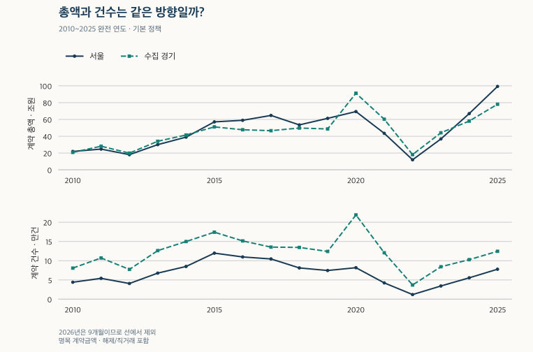
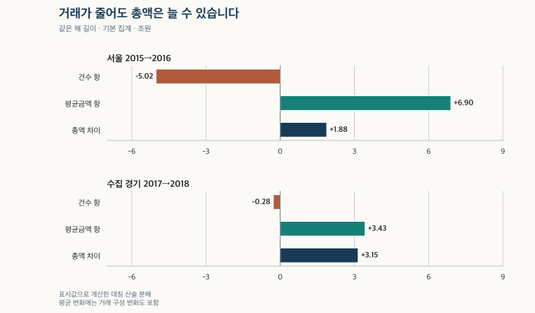

거래량과 시장 읽기 · 연간 계약금액
서울 아파트 연간 거래금액: 거래량이 줄어도 총액은 늘 수 있을까?
해제 거래는 제외하고 직거래는 포함해 서울·수집 경기의 2010~2026년 아파트 거래금액을 비교합니다. 건수·평균·가격대를 읽고, 마지막에 해제·직거래 모두 포함과 모두 제외 설정을 비교합니다.
분석 기간 · 2010~2026.9 · 2026은 부분 기간 | 자료 기준일 · 2026-10-03 · 과거 수집일 미상 포함
서울 아파트 거래량이 줄면 연간 거래금액도 줄까요? 2015→2016년에는 계약이 9,887건 줄었는데 총액은 57.10조 원에서 58.98조 원으로 늘었습니다. 거래된 아파트 한 건의 평균금액이 높아져 건수 감소를 상쇄했기 때문입니다. 서울과 수집 경기의 2010~2026년 자료에서 건수·총액·평균을 함께 읽어 보겠습니다.
연간 거래금액은 실제로 지급된 현금일까요?
이 글의 거래금액은 계약일이 해당 기간에 속하는 아파트 매매 계약금액의 합계입니다. 국토교통부 아파트 매매 실거래가 상세 자료의 만원 단위 금액을 합산합니다. 1조 원은 1억 만원입니다. 신고가 접수된 해나 잔금이 지급된 해로 묶은 금액이 아닙니다.
범위는 서울 25개 구와 수집 경기 36개 시·구입니다. 경기 전체를 대표한다고 가정하지 않습니다. 기본 표는 유효한 가격·전용면적을 갖고 토지임대부를 제외한 정제 계약을 세며, 관측된 해제 거래는 제외하고 직거래는 포함합니다. 같은 계약의 중복 원천은 먼저 합칩니다. 마지막 절에서 ① 해제·직거래 모두 포함, ② 관측 해제·직거래 모두 제외를 같은 기간과 지역으로 비교합니다. 해제 여부를 알 수 없는 과거의 빈칸은 그대로 남기므로, 모든 시기의 해제를 완전히 제거한 수치는 아닙니다. 해제 기재가 시작된 2020년 2월 전후에는 제외 조건의 관측 범위가 달라집니다.
따라서 합계를 ‘시장으로 새로 들어온 돈’, 대출 실행액 또는 실제 지급이 완료된 매매대금이라고 부를 수 없습니다. 거래되지 않은 아파트까지 평가하는 아파트 재고가치와도 분모가 다릅니다. 한 해의 계약 사건과 특정 시점에 존재하는 주택을 구별해야 합니다.
2010~2025년: 총액의 봉우리와 건수의 봉우리는 다릅니다
서울의 기본 설정 총액은 2025년 91.47조 원, 건수는 약 72,100건입니다. 2015년 119,651건보다 건수는 적지만 총액은 당시 57.10조 원보다 큽니다. 기간이 멀어질수록 물가·명목가격과 거래 구성도 달라지므로 총액의 크기만으로 거래가 더 활발하다고 판단하기 어렵습니다.

| 계약 연도 | 서울 건수 | 서울 총액 조원 | 서울 평균 억원 | 수집 경기 건수 | 경기 총액 조원 | 경기 평균 억원 |
|---|---|---|---|---|---|---|
| 2010년 | 44,094 | 21.92 | 4.97 | 80,748 | 20.77 | 2.57 |
| 2011년 | 54,215 | 24.70 | 4.56 | 107,137 | 28.13 | 2.63 |
| 2012년 | 40,749 | 18.08 | 4.44 | 77,349 | 19.90 | 2.57 |
| 2013년 | 67,760 | 30.02 | 4.43 | 126,174 | 34.01 | 2.70 |
| 2014년 | 85,011 | 38.95 | 4.58 | 149,781 | 41.49 | 2.77 |
| 2015년 | 119,651 | 57.10 | 4.77 | 174,052 | 51.13 | 2.94 |
| 2016년 | 109,764 | 58.98 | 5.37 | 151,422 | 47.73 | 3.15 |
| 2017년 | 104,576 | 64.78 | 6.19 | 135,292 | 46.62 | 3.45 |
| 2018년 | 81,243 | 53.51 | 6.59 | 134,520 | 49.77 | 3.70 |
| 2019년 | 74,554 | 61.29 | 8.22 | 124,043 | 48.66 | 3.92 |
| 2020년 | 78,760 | 66.69 | 8.47 | 209,131 | 87.29 | 4.17 |
| 2021년 | 약 40,900¹ | 41.75 | 10.21 | 약 115,000¹ | 57.70 | 5.02 |
| 2022년 | 약 11,300¹ | 11.11 | 9.83 | 약 35,000¹ | 17.17 | 4.91 |
| 2023년 | 약 32,800¹ | 35.07 | 10.69 | 약 80,800¹ | 42.32 | 5.24 |
| 2024년 | 약 53,200¹ | 64.09 | 12.05 | 약 97,300¹ | 54.90 | 5.64 |
| 2025년 | 약 72,100¹ | 91.47 | 12.69 | 약 115,700¹ | 72.18 | 6.24 |
| 2026년 1~9월² | 약 49,400¹ | 58.34 | 11.81 | 약 105,700¹ | 66.88 | 6.33 |
금액은 100억 원 단위로 반올림해 조원 소수 둘째 자리까지 표시했습니다. 평균은 이 표시 총액을 표시 건수로 나눈 값입니다. ¹ ‘약’으로 표시한 기본 건수는 100건 단위 반올림값이며 평균·건수 차이·분해도 그 표시 건수에 따른 근삿값입니다. ² 마지막 2026년 행은 1~9월뿐입니다. 바로 위의 2025년 전체와 증감률을 계산하지 마세요.
이 표는 거래된 계약의 규모를 보여줍니다. 매물 수나 매도까지 걸린 기간이 없으므로 유동성을 직접 측정하지 않습니다. 거래량이 ‘평년보다 많은가’라는 별도 질문은 거래량 기준 기간 비교에서 확인할 수 있습니다.
건수가 줄어도 총액이 늘어난 부분은 어떻게 나눌까요?
총액을 T, 건수를 N, 건당 평균을 M이라 두면 T=N×M입니다. 두 해의 총액 차이는 건수 변화 × 두 해 평균금액의 평균과 평균금액 변화 × 두 해 건수의 평균으로 정확히 나눌 수 있습니다. 두 항을 더하면 총액 차이가 됩니다.
ΔT = (N₁−N₀) × (M₀+M₁)/2 + (M₁−M₀) × (N₀+N₁)/2
0은 앞 해, 1은 뒤 해입니다. 전후 어느 한 해만 기준으로 삼지 않는 대칭 산술 분해입니다. 총액·건수의 표시값으로 계산하고, 표의 평균을 먼저 소수 둘째 자리로 줄여 계산하지 않았습니다.
| 지역·전후 연도 | 기간 | 건수 차이 | 총액 차이 | 건수 항 | 평균금액 항 |
|---|---|---|---|---|---|
| 서울 2015→2016 | 달력 연도 | -9,887 | +1.88 | -5.02 | +6.90 |
| 수집 경기 2017→2018 | 달력 연도 | -772 | +3.15 | -0.28 | +3.43 |

서울 2015→2016년의 건수 감소는 이 산식에서 −5.02조 원, 평균금액 변화는 +6.90조 원으로 나뉩니다. 수집 경기 2017→2018년에도 772건 감소와 3.15조 원 증가가 함께 나타납니다. 거래 건수만 보면 놓치는 장면입니다.
평균금액 항이 양수라고 모든 아파트가 올랐다는 뜻은 아닙니다. 비싼 지역·큰 면적의 계약 비중이 늘어도 평균은 높아집니다. 이 분해는 평균 변화 안의 구성 효과와 같은 집의 가격 변화를 다시 나누지 않습니다. 금리·정책이 어느 항을 얼마나 일으켰는지 추정한 결과도 아닙니다.
기본 설정의 모든 전후 연도 분해 보기
| 지역·전후 연도 | 동일 기간 | 건수 차이 | 총액 차이 | 건수 항 | 평균금액 항 |
|---|---|---|---|---|---|
| 서울 2010→2011 | 달력 연도 | +10,121 | +2.78 | +4.82 | -2.04 |
| 서울 2011→2012 | 달력 연도 | -13,466 | -6.62 | -6.05 | -0.57 |
| 서울 2012→2013 | 달력 연도 | +27,011 | +11.94 | +11.98 | -0.04 |
| 서울 2013→2014 | 달력 연도 | +17,251 | +8.93 | +7.77 | +1.16 |
| 서울 2014→2015 | 달력 연도 | +34,640 | +18.15 | +16.20 | +1.95 |
| 서울 2015→2016 | 달력 연도 | -9,887 | +1.88 | -5.02 | +6.90 |
| 서울 2016→2017 | 달력 연도 | -5,188 | +5.80 | -3.00 | +8.80 |
| 서울 2017→2018 | 달력 연도 | -23,333 | -11.27 | -14.91 | +3.64 |
| 서울 2018→2019 | 달력 연도 | -6,689 | +7.78 | -4.95 | +12.73 |
| 서울 2019→2020 | 달력 연도 | +4,206 | +5.40 | +3.51 | +1.89 |
| 서울 2020→2021 | 달력 연도¹ | -37,860 | -24.94 | -35.35 | +10.41 |
| 서울 2021→2022 | 달력 연도¹ | -29,600 | -30.64 | -29.66 | -0.98 |
| 서울 2022→2023 | 달력 연도¹ | +21,500 | +23.96 | +22.06 | +1.90 |
| 서울 2023→2024 | 달력 연도¹ | +20,400 | +29.02 | +23.19 | +5.83 |
| 서울 2024→2025 | 달력 연도¹ | +18,900 | +27.38 | +23.37 | +4.01 |
| 수집 경기 2010→2011 | 달력 연도 | +26,389 | +7.36 | +6.86 | +0.50 |
| 수집 경기 2011→2012 | 달력 연도 | -29,788 | -8.23 | -7.74 | -0.49 |
| 수집 경기 2012→2013 | 달력 연도 | +48,825 | +14.11 | +12.86 | +1.25 |
| 수집 경기 2013→2014 | 달력 연도 | +23,607 | +7.48 | +6.45 | +1.03 |
| 수집 경기 2014→2015 | 달력 연도 | +24,271 | +9.64 | +6.93 | +2.71 |
| 수집 경기 2015→2016 | 달력 연도 | -22,630 | -3.40 | -6.89 | +3.49 |
| 수집 경기 2016→2017 | 달력 연도 | -16,130 | -1.11 | -5.32 | +4.21 |
| 수집 경기 2017→2018 | 달력 연도 | -772 | +3.15 | -0.28 | +3.43 |
| 수집 경기 2018→2019 | 달력 연도 | -10,477 | -1.11 | -3.99 | +2.88 |
| 수집 경기 2019→2020 | 달력 연도 | +85,088 | +38.63 | +34.45 | +4.18 |
| 수집 경기 2020→2021 | 달력 연도¹ | -94,131 | -29.59 | -43.26 | +13.67 |
| 수집 경기 2021→2022 | 달력 연도¹ | -80,000 | -40.53 | -39.69 | -0.84 |
| 수집 경기 2022→2023 | 달력 연도¹ | +45,800 | +25.15 | +23.23 | +1.92 |
| 수집 경기 2023→2024 | 달력 연도¹ | +16,500 | +12.58 | +8.98 | +3.60 |
| 수집 경기 2024→2025 | 달력 연도¹ | +18,400 | +17.28 | +10.93 | +6.35 |
| 서울 2010→2011 | 1~9월 | +16,381 | +6.52 | +7.69 | -1.17 |
| 서울 2011→2012 | 1~9월 | -15,220 | -7.28 | -6.78 | -0.50 |
| 서울 2012→2013 | 1~9월 | +20,518 | +9.04 | +9.01 | +0.03 |
| 서울 2013→2014 | 1~9월 | +16,319 | +8.42 | +7.33 | +1.09 |
| 서울 2014→2015 | 1~9월 | +32,403 | +15.69 | +15.00 | +0.69 |
| 서울 2015→2016 | 1~9월 | -9,309 | +1.53 | -4.66 | +6.19 |
| 서울 2016→2017 | 1~9월 | -6,087 | +1.88 | -3.44 | +5.32 |
| 서울 2017→2018 | 1~9월 | -7,001 | +0.53 | -4.40 | +4.93 |
| 서울 2018→2019 | 1~9월 | -32,553 | -14.64 | -24.14 | +9.50 |
| 서울 2019→2020 | 1~9월 | +19,094 | +14.67 | +15.55 | -0.88 |
| 서울 2020→2021 | 1~9월 | -24,865 | -12.44 | -22.64 | +10.20 |
| 서울 2021→2022 | 1~9월¹ | -26,915 | -27.46 | -27.13 | -0.33 |
| 서울 2022→2023 | 1~9월¹ | +17,700 | +19.66 | +18.35 | +1.31 |
| 서울 2023→2024 | 1~9월¹ | +16,400 | +23.05 | +18.62 | +4.43 |
| 서울 2024→2025 | 1~9월¹ | +12,600 | +19.74 | +15.62 | +4.12 |
| 서울 2025→2026 | 1~9월¹ | -6,700 | -13.52 | -8.25 | -5.27 |
| 수집 경기 2010→2011 | 1~9월 | +34,902 | +9.88 | +8.86 | +1.02 |
| 수집 경기 2011→2012 | 1~9월 | -31,664 | -8.67 | -8.16 | -0.51 |
| 수집 경기 2012→2013 | 1~9월 | +36,382 | +10.32 | +9.46 | +0.86 |
| 수집 경기 2013→2014 | 1~9월 | +23,062 | +7.23 | +6.24 | +0.99 |
| 수집 경기 2014→2015 | 1~9월 | +27,391 | +9.68 | +7.76 | +1.92 |
| 수집 경기 2015→2016 | 1~9월 | -25,250 | -5.12 | -7.58 | +2.46 |
| 수집 경기 2016→2017 | 1~9월 | -8,314 | +0.41 | -2.69 | +3.10 |
| 수집 경기 2017→2018 | 1~9월 | +2,398 | +5.19 | +0.86 | +4.33 |
| 수집 경기 2018→2019 | 1~9월 | -39,725 | -15.82 | -14.77 | -1.05 |
| 수집 경기 2019→2020 | 1~9월 | +86,685 | +37.19 | +33.24 | +3.95 |
| 수집 경기 2020→2021 | 1~9월 | -54,584 | -12.02 | -24.52 | +12.50 |
| 수집 경기 2021→2022 | 1~9월¹ | -73,959 | -36.79 | -36.81 | +0.02 |
| 수집 경기 2022→2023 | 1~9월¹ | +37,700 | +20.93 | +19.39 | +1.54 |
| 수집 경기 2023→2024 | 1~9월¹ | +13,200 | +9.85 | +7.24 | +2.61 |
| 수집 경기 2024→2025 | 1~9월¹ | +4,300 | +6.98 | +2.55 | +4.43 |
| 수집 경기 2025→2026 | 1~9월¹ | +22,400 | +15.13 | +14.04 | +1.09 |
| 서울 2010→2011 | 1~6월 | +10,578 | +4.20 | +4.99 | -0.79 |
| 서울 2011→2012 | 1~6월 | -9,814 | -4.78 | -4.40 | -0.38 |
| 서울 2012→2013 | 1~6월 | +12,389 | +5.80 | +5.52 | +0.28 |
| 서울 2013→2014 | 1~6월 | +6,990 | +3.32 | +3.17 | +0.15 |
| 서울 2014→2015 | 1~6월 | +28,029 | +13.37 | +12.89 | +0.48 |
| 서울 2015→2016 | 1~6월 | -13,839 | -3.17 | -6.85 | +3.68 |
| 서울 2016→2017 | 1~6월 | +1,121 | +3.95 | +0.62 | +3.33 |
| 서울 2017→2018 | 1~6월 | -9,328 | -3.52 | -5.67 | +2.15 |
| 서울 2018→2019 | 1~6월 | -25,806 | -12.94 | -18.40 | +5.46 |
| 서울 2019→2020 | 1~6월 | +22,689 | +16.69 | +17.71 | -1.02 |
| 서울 2020→2021 | 1~6월 | -17,229 | -7.44 | -15.12 | +7.68 |
| 서울 2021→2022 | 1~6월¹ | -17,628 | -17.21 | -17.80 | +0.59 |
| 서울 2022→2023 | 1~6월¹ | +9,100 | +9.60 | +9.42 | +0.18 |
| 서울 2023→2024 | 1~6월¹ | +9,200 | +12.81 | +10.17 | +2.64 |
| 서울 2024→2025 | 1~6월¹ | +14,300 | +22.74 | +17.77 | +4.97 |
| 서울 2025→2026 | 1~6월¹ | -1,700 | -7.09 | -2.13 | -4.96 |
| 수집 경기 2010→2011 | 1~6월 | +23,065 | +6.67 | +5.84 | +0.83 |
| 수집 경기 2011→2012 | 1~6월 | -20,640 | -5.73 | -5.32 | -0.41 |
| 수집 경기 2012→2013 | 1~6월 | +19,948 | +5.62 | +5.16 | +0.46 |
| 수집 경기 2013→2014 | 1~6월 | +12,406 | +3.99 | +3.33 | +0.66 |
| 수집 경기 2014→2015 | 1~6월 | +29,199 | +9.42 | +8.20 | +1.22 |
| 수집 경기 2015→2016 | 1~6월 | -30,571 | -7.96 | -8.99 | +1.03 |
| 수집 경기 2016→2017 | 1~6월 | -210 | +1.93 | -0.07 | +2.00 |
| 수집 경기 2017→2018 | 1~6월 | -4,315 | +1.19 | -1.51 | +2.70 |
| 수집 경기 2018→2019 | 1~6월 | -24,655 | -10.36 | -8.73 | -1.63 |
| 수집 경기 2019→2020 | 1~6월 | +74,443 | +30.47 | +26.91 | +3.56 |
| 수집 경기 2020→2021 | 1~6월 | -43,140 | -10.62 | -18.40 | +7.78 |
| 수집 경기 2021→2022 | 1~6월¹ | -49,037 | -22.06 | -23.99 | +1.93 |
| 수집 경기 2022→2023 | 1~6월¹ | +20,100 | +10.97 | +10.42 | +0.55 |
| 수집 경기 2023→2024 | 1~6월¹ | +6,900 | +4.90 | +3.73 | +1.17 |
| 수집 경기 2024→2025 | 1~6월¹ | +8,500 | +8.31 | +4.96 | +3.35 |
| 수집 경기 2025→2026 | 1~6월¹ | +19,700 | +13.96 | +12.36 | +1.60 |
달력 연도는 2010→2011~2024→2025, 1~9월·1~6월은 2025→2026까지 같은 기간끼리 비교합니다.
2026년은 2025년의 같은 1~9월과 비교합니다
기본 설정의 서울 1~9월 총액은 2025년 71.86조 원에서 2026년 58.34조 원으로 줄었습니다. 수집 경기는 같은 기간 51.75조 원에서 66.88조 원으로 늘었습니다. 이 범위에서는 두 지역의 방향이 다릅니다. 서울의 2025년 전체 91.47조 원을 2026년 9개월과 비교하면 기간 길이의 차이까지 섞입니다.
| 계약 연도 | 서울 건수 | 서울 총액 조원 | 서울 평균 억원 | 수집 경기 건수 | 경기 총액 조원 | 경기 평균 억원 |
|---|---|---|---|---|---|---|
| 2010년 | 26,635 | 12.95 | 4.86 | 50,776 | 12.51 | 2.46 |
| 2011년 | 43,016 | 19.47 | 4.53 | 85,678 | 22.39 | 2.61 |
| 2012년 | 27,796 | 12.19 | 4.39 | 54,014 | 13.72 | 2.54 |
| 2013년 | 48,314 | 21.23 | 4.39 | 90,396 | 24.04 | 2.66 |
| 2014년 | 64,633 | 29.65 | 4.59 | 113,458 | 31.27 | 2.76 |
| 2015년 | 97,036 | 45.34 | 4.67 | 140,849 | 40.95 | 2.91 |
| 2016년 | 87,727 | 46.87 | 5.34 | 115,599 | 35.83 | 3.10 |
| 2017년 | 81,640 | 48.75 | 5.97 | 107,285 | 36.24 | 3.38 |
| 2018년 | 74,639 | 49.28 | 6.60 | 109,683 | 41.43 | 3.78 |
| 2019년 | 42,086 | 34.64 | 8.23 | 69,958 | 25.61 | 3.66 |
| 2020년 | 61,180 | 49.31 | 8.06 | 156,643 | 62.80 | 4.01 |
| 2021년 | 36,315 | 36.87 | 10.15 | 102,059 | 50.78 | 4.98 |
| 2022년 | 약 9,400¹ | 9.41 | 10.01 | 약 28,100¹ | 13.99 | 4.98 |
| 2023년 | 약 27,100¹ | 29.07 | 10.73 | 약 65,800¹ | 34.92 | 5.31 |
| 2024년 | 약 43,500¹ | 52.12 | 11.98 | 약 79,000¹ | 44.77 | 5.67 |
| 2025년 | 약 56,100¹ | 71.86 | 12.81 | 약 83,300¹ | 51.75 | 6.21 |
| 2026년 | 약 49,400¹ | 58.34 | 11.81 | 약 105,700¹ | 66.88 | 6.33 |
기본 표의 서울 2025년 1~9월은 약 56,100건, 2026년 같은 기간은 약 49,400건입니다. 같은 기간을 맞춰도 관측 시점까지의 신고·정정·해제 반영 정도는 다를 수 있습니다.
모든 해의 같은 1~6월 비교 보기
| 계약 연도 | 서울 건수 | 서울 총액 조원 | 서울 평균 억원 | 수집 경기 건수 | 경기 총액 조원 | 경기 평균 억원 |
|---|---|---|---|---|---|---|
| 2010년 | 19,348 | 9.44 | 4.88 | 35,607 | 8.71 | 2.45 |
| 2011년 | 29,926 | 13.64 | 4.56 | 58,672 | 15.38 | 2.62 |
| 2012년 | 20,112 | 8.86 | 4.41 | 38,032 | 9.65 | 2.54 |
| 2013년 | 32,501 | 14.66 | 4.51 | 57,980 | 15.27 | 2.63 |
| 2014년 | 39,491 | 17.98 | 4.55 | 70,386 | 19.26 | 2.74 |
| 2015년 | 67,520 | 31.35 | 4.64 | 99,585 | 28.68 | 2.88 |
| 2016년 | 53,681 | 28.18 | 5.25 | 69,014 | 20.72 | 3.00 |
| 2017년 | 54,802 | 32.13 | 5.86 | 68,804 | 22.65 | 3.29 |
| 2018년 | 45,474 | 28.61 | 6.29 | 64,489 | 23.84 | 3.70 |
| 2019년 | 19,668 | 15.67 | 7.97 | 39,834 | 13.48 | 3.38 |
| 2020년 | 42,357 | 32.36 | 7.64 | 114,277 | 43.95 | 3.85 |
| 2021년 | 25,128 | 24.92 | 9.92 | 71,137 | 33.33 | 4.69 |
| 2022년 | 약 7,500¹ | 7.71 | 10.28 | 약 22,100¹ | 11.27 | 5.10 |
| 2023년 | 약 16,600¹ | 17.31 | 10.43 | 약 42,200¹ | 22.24 | 5.27 |
| 2024년 | 약 25,800¹ | 30.12 | 11.67 | 약 49,100¹ | 27.14 | 5.53 |
| 2025년 | 약 40,100¹ | 52.86 | 13.18 | 약 57,600¹ | 35.45 | 6.15 |
| 2026년 | 약 38,400¹ | 45.77 | 11.92 | 약 77,300¹ | 49.41 | 6.39 |
같은 달끼리 맞춰도 최근 계약의 신고·정정·해제 반영은 더 진행될 수 있습니다. 국토교통부 FAQ가 구별하는 계약일과 신고일의 시차를 함께 고려해야 합니다. 9개월 합계를 12/9배해 확정 연간 전망으로 만들지 않았습니다.
큰 총액을 만든 것은 어느 가격대일까요?
각 연도의 총액을 12개 계약 가격대로 나눴습니다. 각 칸의 첫 줄은 해당 가격대의 금액, 둘째 줄은 그해 전체 금액에서 차지하는 비중입니다. 같은 한 건이라도 고가 계약은 총액에서 더 큰 무게를 갖습니다. 따라서 금액 비중을 거래 건수 비중으로 읽지 않습니다.
표는 왼쪽부터 낮은 가격대 순서입니다. 경계는 ‘하한 초과·상한 이하’입니다. 정확히 6억 원인 계약은 3억 초과~6억 이하에 들어갑니다. 가격대는 당시 명목금액이므로 2010년의 6억 원과 2025년의 6억 원이 같은 구매력이나 시장 내 순위를 뜻하지 않습니다.
서울의 3억 초과~6억 이하 금액 비중은 2010년 39.2%에서 2025년 5.6%로 낮아졌습니다. 2025년에는 15억 초과~20억 이하가 16.03조 원, 전체의 17.5%를 차지했습니다. 수집 경기의 2025년에는 3억 초과~6억 이하 30.8%와 6억 초과~9억 이하 30.6%가 비슷했습니다. 두 지역의 총액을 구성하는 가격대가 같지 않습니다.
서울 · 12개 가격대의 연도별 금액과 비중
| 계약 연도 | 3억 이하 | 3억 초과~6억 이하 | 6억 초과~9억 이하 | 9억 초과~12억 이하 | 12억 초과~15억 이하 | 15억 초과~20억 이하 | 20억 초과~25억 이하 | 25억 초과~30억 이하 | 30억 초과~40억 이하 | 40억 초과~50억 이하 | 50억 초과~75억 이하 | 75억 초과 |
|---|---|---|---|---|---|---|---|---|---|---|---|---|
| 2010년 | 3.09 14.1% | 8.59 39.2% | 4.29 19.6% | 2.48 11.3% | 1.43 6.5% | 1.25 5.7% | 0.48 2.2% | 0.19 0.9% | 비공개 | 비공개 | 비공개 | 거래 없음 |
| 2011년 | 4.09 16.6% | 10.98 44.5% | 4.88 19.8% | 2.13 8.6% | 1.18 4.8% | 0.80 3.2% | 0.36 1.5% | 0.17 0.7% | 비공개 | 비공개 | 거래 없음 | 거래 없음 |
| 2012년 | 3.27 18.1% | 7.74 42.8% | 3.83 21.2% | 1.36 7.5% | 0.81 4.5% | 0.63 3.5% | 0.24 1.3% | 0.10 0.6% | 비공개 | 비공개 | 비공개 | 거래 없음 |
| 2013년 | 5.16 17.2% | 13.97 46.5% | 5.74 19.1% | 2.17 7.2% | 1.15 3.8% | 1.17 3.9% | 0.36 1.2% | 0.14 0.5% | 0.11 0.4% | 비공개 | 비공개 | 거래 없음 |
| 2014년 | 5.85 15.0% | 18.63 47.8% | 7.13 18.3% | 3.05 7.8% | 1.88 4.8% | 1.24 3.2% | 0.57 1.5% | 0.25 0.6% | 0.23 0.6% | 비공개 | 비공개 | 거래 없음 |
| 2015년 | 7.28 12.7% | 27.65 48.4% | 11.19 19.6% | 4.59 8.0% | 3.01 5.3% | 1.70 3.0% | 0.88 1.5% | 0.33 0.6% | 0.28 0.5% | 비공개 | 비공개 | 비공개 |
| 2016년 | 5.08 8.6% | 26.04 44.2% | 13.23 22.4% | 5.87 10.0% | 3.71 6.3% | 2.51 4.3% | 1.08 1.8% | 0.60 1.0% | 0.52 0.9% | 0.23 0.4% | 비공개 | 비공개 |
| 2017년 | 3.57 5.5% | 23.51 36.3% | 15.73 24.3% | 7.71 11.9% | 5.74 8.9% | 4.86 7.5% | 1.48 2.3% | 0.93 1.4% | 0.76 1.2% | 0.33 0.5% | 비공개 | 비공개 |
| 2018년 | 2.48 4.6% | 17.58 32.9% | 13.55 25.3% | 5.87 11.0% | 4.58 8.6% | 4.90 9.2% | 2.00 3.7% | 0.97 1.8% | 0.88 1.6% | 0.49 0.9% | 비공개 | 비공개 |
| 2019년 | 1.51 2.5% | 11.99 19.6% | 15.49 25.3% | 8.80 14.4% | 6.85 11.2% | 8.29 13.5% | 3.88 6.3% | 1.97 3.2% | 1.59 2.6% | 0.72 1.2% | 비공개 | 비공개 |
| 2020년 | 1.29 1.9% | 11.48 17.2% | 17.62 26.4% | 10.96 16.4% | 8.91 13.4% | 7.75 11.6% | 3.82 5.7% | 2.28 3.4% | 1.70 2.5% | 비공개 | 비공개 | 비공개 |
| 2021년 | 0.59 1.4% | 3.98 9.5% | 8.76 21.0% | 7.11 17.0% | 6.05 14.5% | 비공개 | 비공개 | 비공개 | 비공개 | 비공개 | 비공개 | 비공개 |
| 2022년 | 0.35 3.2% | 1.12 10.1% | 1.86 16.7% | 1.74 15.7% | 1.26 11.3% | 1.36 12.2% | 0.94 8.5% | 비공개 | 비공개 | 비공개 | 비공개 | 비공개 |
| 2023년 | 0.33 0.9% | 3.14 9.0% | 6.93 19.8% | 6.31 18.0% | 4.70 13.4% | 5.08 14.5% | 3.39 9.7% | 1.90 5.4% | 비공개 | 비공개 | 비공개 | 비공개 |
| 2024년 | 0.40 0.6% | 4.21 6.6% | 10.23 16.0% | 10.79 16.8% | 8.88 13.9% | 9.23 14.4% | 6.59 10.3% | 4.31 6.7% | 4.68 7.3% | 2.10 3.3% | 비공개 | 비공개 |
| 2025년 | 0.45 0.5% | 5.15 5.6% | 12.77 14.0% | 14.07 15.4% | 13.92 15.2% | 16.03 17.5% | 8.42 9.2% | 6.18 6.8% | 7.36 8.0% | 3.22 3.5% | 비공개 | 비공개 |
| 2026년 1~9월² | 0.33 0.6% | 4.65 8.0% | 9.76 16.7% | 8.97 15.4% | 7.71 13.2% | 9.10 15.6% | 4.99 8.6% | 3.52 6.0% | 4.69 8.0% | 비공개 | 비공개 | 비공개 |
수집 경기 · 12개 가격대의 연도별 금액과 비중
| 계약 연도 | 3억 이하 | 3억 초과~6억 이하 | 6억 초과~9억 이하 | 9억 초과~12억 이하 | 12억 초과~15억 이하 | 15억 초과~20억 이하 | 20억 초과~25억 이하 | 25억 초과~30억 이하 | 30억 초과~40억 이하 | 40억 초과~50억 이하 | 50억 초과~75억 이하 | 75억 초과 |
|---|---|---|---|---|---|---|---|---|---|---|---|---|
| 2010년 | 11.01 53.0% | 7.72 37.2% | 1.62 7.8% | 0.32 1.5% | 0.07 0.3% | 비공개 | 비공개 | 비공개 | 거래 없음 | 거래 없음 | 거래 없음 | 거래 없음 |
| 2011년 | 15.16 53.9% | 9.86 35.1% | 2.69 9.6% | 0.32 1.1% | 0.06 0.2% | 비공개 | 비공개 | 비공개 | 비공개 | 거래 없음 | 거래 없음 | 거래 없음 |
| 2012년 | 11.22 56.4% | 6.96 35.0% | 1.48 7.4% | 0.18 0.9% | 0.03 0.2% | 비공개 | 비공개 | 비공개 | 거래 없음 | 거래 없음 | 거래 없음 | 거래 없음 |
| 2013년 | 17.93 52.7% | 13.51 39.7% | 2.23 6.6% | 0.26 0.8% | 0.05 0.1% | 비공개 | 비공개 | 비공개 | 거래 없음 | 거래 없음 | 거래 없음 | 거래 없음 |
| 2014년 | 20.43 49.2% | 18.28 44.1% | 2.39 5.8% | 0.32 0.8% | 0.05 0.1% | 0.02 0.0% | 거래 없음 | 거래 없음 | 거래 없음 | 거래 없음 | 거래 없음 | 거래 없음 |
| 2015년 | 22.49 44.0% | 24.50 47.9% | 3.55 6.9% | 0.43 0.8% | 0.12 0.2% | 비공개 | 비공개 | 비공개 | 비공개 | 거래 없음 | 거래 없음 | 거래 없음 |
| 2016년 | 18.08 37.9% | 24.27 50.8% | 4.63 9.7% | 0.58 1.2% | 0.13 0.3% | 비공개 | 거래 없음 | 비공개 | 비공개 | 거래 없음 | 거래 없음 | 거래 없음 |
| 2017년 | 14.34 30.8% | 24.59 52.7% | 6.12 13.1% | 1.16 2.5% | 0.31 0.7% | 비공개 | 거래 없음 | 비공개 | 비공개 | 거래 없음 | 거래 없음 | 거래 없음 |
| 2018년 | 12.36 24.8% | 27.91 56.1% | 6.58 13.2% | 2.06 4.1% | 0.57 1.1% | 비공개 | 비공개 | 비공개 | 거래 없음 | 비공개 | 거래 없음 | 거래 없음 |
| 2019년 | 11.22 23.1% | 23.83 49.0% | 8.33 17.1% | 3.34 6.9% | 1.37 2.8% | 0.51 1.0% | 비공개 | 비공개 | 비공개 | 거래 없음 | 거래 없음 | 거래 없음 |
| 2020년 | 17.81 20.4% | 39.72 45.5% | 19.57 22.4% | 5.27 6.0% | 3.47 4.0% | 비공개 | 비공개 | 비공개 | 비공개 | 거래 없음 | 거래 없음 | 거래 없음 |
| 2021년 | 6.77 11.7% | 21.37 37.0% | 17.92 31.1% | 6.06 10.5% | 비공개 | 비공개 | 비공개 | 비공개 | 0.03 0.1% | 거래 없음 | 거래 없음 | 거래 없음 |
| 2022년 | 1.93 11.2% | 7.07 41.2% | 4.86 28.3% | 1.64 9.6% | 0.87 5.1% | 비공개 | 비공개 | 비공개 | 비공개 | 비공개 | 비공개 | 거래 없음 |
| 2023년 | 3.52 8.3% | 18.47 43.6% | 12.18 28.8% | 4.13 9.8% | 2.28 5.4% | 비공개 | 비공개 | 비공개 | 비공개 | 거래 없음 | 거래 없음 | 거래 없음 |
| 2024년 | 3.83 7.0% | 20.37 37.1% | 16.96 30.9% | 6.42 11.7% | 3.66 6.7% | 비공개 | 비공개 | 비공개 | 비공개 | 비공개 | 비공개 | 거래 없음 |
| 2025년 | 3.87 5.4% | 22.21 30.8% | 22.07 30.6% | 10.66 14.8% | 6.14 8.5% | 4.46 6.2% | 비공개 | 비공개 | 비공개 | 비공개 | 거래 없음 | 거래 없음 |
| 2026년 1~9월² | 3.30 4.9% | 20.14 30.1% | 20.86 31.2% | 10.77 16.1% | 6.07 9.1% | 비공개 | 비공개 | 비공개 | 비공개 | 비공개 | 비공개 | 거래 없음 |
비공개·거래 없음·반올림 0.00은 다릅니다. 비공개는 작은 범주나 표 사이의 복원을 막기 위해 숨긴 값입니다. 거래 없음은 해당 조건의 관측 계약이 0건입니다. ³ 0.00은 거래가 있지만 반올림 금액이 0.00조 원인 경우입니다. 금액을 각각 반올림하고 일부 칸을 보호했으므로 보이는 비중을 더해 반드시 100%가 되지는 않습니다. 남은 차이를 비공개 칸의 정확한 값으로 채우지 않습니다.
가격대 비중의 상승은 그 가격대의 총액 증가와도 다릅니다. 전체가 더 빠르게 줄면 해당 가격대의 금액이 줄어도 비중은 커집니다. 월 단위로 이 차이를 따라가려면 서울 거래금액과 고가 계약의 집중도를 함께 보세요. 그 글은 해제·직거래를 제외한 모집단이므로 이 글의 기본 표와 바로 이어 붙이지 않습니다.
거래금액 뉴스를 내 관심 지역에 적용하는 순서
- 같은 기간을 맞춥니다. 연간·누계·분기를 구분하고 최신 부분 기간에는 전년의 같은 달을 붙입니다.
- 지역과 제외 기준을 적습니다. 서울 전체인지 관심 구인지, 경기의 어느 수집 범위인지, 해제·직거래를 포함했는지 확인합니다.
- 건수·총액·평균을 한 줄에 둡니다. 총액이 늘었을 때 계약이 많아진 것인지 평균이 높아진 것인지 먼저 나눕니다.
- 가격대와 거래 구성을 확인합니다. 평균금액의 방향을 내 후보 아파트의 시세 방향으로 바꾸기 전에 같은 단지·면적·조건의 거래를 별도로 비교합니다.
총액은 시장에서 거래된 계약의 크기를 읽는 데 유용합니다. 하지만 건수가 줄어도 커질 수 있고, 값비싼 계약의 비중이 높아도 그 가격대의 금액은 줄 수 있습니다. 광역 합계만으로 개인의 매수 시점이나 대출 가능 금액을 결정하지 말고, 관심 물건의 가격과 실제 자금 계획을 따로 확인하세요.
마지막 비교: 해제·직거래를 모두 포함하거나 모두 제외하면?
지금까지 본문의 기본은 관측 해제 제외·직거래 포함이었습니다. 아래에서는 기간과 지역을 고정하고 두 비교 설정을 더합니다. 서울 2025년 기본 총액은 91.47조 원, 약 72,100건입니다. 해제·직거래를 모두 포함하면 99.29조 원, 77,865건이고, 관측 해제·직거래를 모두 제외하면 89.16조 원, 69,280건입니다.
| 지역·기간 | 설정 | 건수 | 총액 조원 | 평균 억원 |
|---|---|---|---|---|
| 서울 2025년 | 기본 · 관측 해제 제외·직거래 포함 | 약 72,100¹ | 91.47 | 12.69 |
| 서울 2025년 | 비교 1 · 해제·직거래 포함 | 77,865 | 99.29 | 12.75 |
| 서울 2025년 | 비교 2 · 관측 해제·직거래 제외 | 69,280 | 89.16 | 12.87 |
| 서울 2026년 1~9월 | 기본 · 관측 해제 제외·직거래 포함 | 약 49,400¹ | 58.34 | 11.81 |
| 서울 2026년 1~9월 | 비교 1 · 해제·직거래 포함 | 50,883 | 60.23 | 11.84 |
| 서울 2026년 1~9월 | 비교 2 · 관측 해제·직거래 제외 | 47,378 | 56.75 | 11.98 |
| 수집 경기 2025년 | 기본 · 관측 해제 제외·직거래 포함 | 약 115,700¹ | 72.18 | 6.24 |
| 수집 경기 2025년 | 비교 1 · 해제·직거래 포함 | 124,405 | 78.12 | 6.28 |
| 수집 경기 2025년 | 비교 2 · 관측 해제·직거래 제외 | 111,135 | 70.11 | 6.31 |
| 수집 경기 2026년 1~9월 | 기본 · 관측 해제 제외·직거래 포함 | 약 105,700¹ | 66.88 | 6.33 |
| 수집 경기 2026년 1~9월 | 비교 1 · 해제·직거래 포함 | 110,008 | 69.46 | 6.31 |
| 수집 경기 2026년 1~9월 | 비교 2 · 관측 해제·직거래 제외 | 101,951 | 65.10 | 6.39 |
1. 해제 거래와 직거래를 모두 포함
해제 여부와 관계없이 신고된 계약 사건의 규모를 보는 설정입니다. 서울 2025년의 99.29조 원은 표시 총액 기준으로 기본값보다 7.82조 원 큽니다. 이 차이는 이 집계에서 제외한 관측 해제 계약의 금액에 해당하며, 직거래 포함 여부는 같습니다. 실제 지급된 돈이나 허위 거래의 규모로 바꾸어 읽지 않습니다.
둘 다 포함 · 달력 연도 총액·건수·평균
| 계약 연도 | 서울 건수 | 서울 총액 조원 | 서울 평균 억원 | 수집 경기 건수 | 경기 총액 조원 | 경기 평균 억원 |
|---|---|---|---|---|---|---|
| 2010년 | 44,094 | 21.92 | 4.97 | 80,748 | 20.77 | 2.57 |
| 2011년 | 54,215 | 24.70 | 4.56 | 107,137 | 28.13 | 2.63 |
| 2012년 | 40,749 | 18.08 | 4.44 | 77,349 | 19.90 | 2.57 |
| 2013년 | 67,760 | 30.02 | 4.43 | 126,174 | 34.01 | 2.70 |
| 2014년 | 85,011 | 38.95 | 4.58 | 149,781 | 41.49 | 2.77 |
| 2015년 | 119,651 | 57.10 | 4.77 | 174,052 | 51.13 | 2.94 |
| 2016년 | 109,764 | 58.98 | 5.37 | 151,422 | 47.73 | 3.15 |
| 2017년 | 104,576 | 64.78 | 6.19 | 135,292 | 46.62 | 3.45 |
| 2018년 | 81,243 | 53.51 | 6.59 | 134,520 | 49.77 | 3.70 |
| 2019년 | 74,554 | 61.29 | 8.22 | 124,043 | 48.66 | 3.92 |
| 2020년 | 81,837 | 69.37 | 8.48 | 218,863 | 91.17 | 4.17 |
| 2021년 | 42,350 | 43.46 | 10.26 | 120,611 | 60.25 | 5.00 |
| 2022년 | 12,034 | 11.96 | 9.94 | 36,917 | 18.15 | 4.92 |
| 2023년 | 34,333 | 36.78 | 10.71 | 84,304 | 44.13 | 5.23 |
| 2024년 | 55,553 | 66.94 | 12.05 | 102,687 | 58.06 | 5.65 |
| 2025년 | 77,865 | 99.29 | 12.75 | 124,405 | 78.12 | 6.28 |
| 2026년 1~9월² | 50,883 | 60.23 | 11.84 | 110,008 | 69.46 | 6.31 |
둘 다 포함 · 같은 1~9월·1~6월
| 계약 연도 | 서울 건수 | 서울 총액 조원 | 서울 평균 억원 | 수집 경기 건수 | 경기 총액 조원 | 경기 평균 억원 |
|---|---|---|---|---|---|---|
| 2010년 | 26,635 | 12.95 | 4.86 | 50,776 | 12.51 | 2.46 |
| 2011년 | 43,016 | 19.47 | 4.53 | 85,678 | 22.39 | 2.61 |
| 2012년 | 27,796 | 12.19 | 4.39 | 54,014 | 13.72 | 2.54 |
| 2013년 | 48,314 | 21.23 | 4.39 | 90,396 | 24.04 | 2.66 |
| 2014년 | 64,633 | 29.65 | 4.59 | 113,458 | 31.27 | 2.76 |
| 2015년 | 97,036 | 45.34 | 4.67 | 140,849 | 40.95 | 2.91 |
| 2016년 | 87,727 | 46.87 | 5.34 | 115,599 | 35.83 | 3.10 |
| 2017년 | 81,640 | 48.75 | 5.97 | 107,285 | 36.24 | 3.38 |
| 2018년 | 74,639 | 49.28 | 6.60 | 109,683 | 41.43 | 3.78 |
| 2019년 | 42,086 | 34.64 | 8.23 | 69,958 | 25.61 | 3.66 |
| 2020년 | 63,544 | 51.27 | 8.07 | 163,230 | 65.36 | 4.00 |
| 2021년 | 37,543 | 38.29 | 10.20 | 107,023 | 52.97 | 4.95 |
| 2022년 | 9,999 | 10.16 | 10.16 | 29,640 | 14.79 | 4.99 |
| 2023년 | 28,271 | 30.46 | 10.77 | 68,510 | 36.38 | 5.31 |
| 2024년 | 45,265 | 54.26 | 11.99 | 83,197 | 47.19 | 5.67 |
| 2025년 | 약 61,200¹ | 78.74 | 12.87 | 90,354 | 56.59 | 6.26 |
| 2026년 | 50,883 | 60.23 | 11.84 | 110,008 | 69.46 | 6.31 |
| 계약 연도 | 서울 건수 | 서울 총액 조원 | 서울 평균 억원 | 수집 경기 건수 | 경기 총액 조원 | 경기 평균 억원 |
|---|---|---|---|---|---|---|
| 2010년 | 19,348 | 9.44 | 4.88 | 35,607 | 8.71 | 2.45 |
| 2011년 | 29,926 | 13.64 | 4.56 | 58,672 | 15.38 | 2.62 |
| 2012년 | 20,112 | 8.86 | 4.41 | 38,032 | 9.65 | 2.54 |
| 2013년 | 32,501 | 14.66 | 4.51 | 57,980 | 15.27 | 2.63 |
| 2014년 | 39,491 | 17.98 | 4.55 | 70,386 | 19.26 | 2.74 |
| 2015년 | 67,520 | 31.35 | 4.64 | 99,585 | 28.68 | 2.88 |
| 2016년 | 53,681 | 28.18 | 5.25 | 69,014 | 20.72 | 3.00 |
| 2017년 | 54,802 | 32.13 | 5.86 | 68,804 | 22.65 | 3.29 |
| 2018년 | 45,474 | 28.61 | 6.29 | 64,489 | 23.84 | 3.70 |
| 2019년 | 19,668 | 15.67 | 7.97 | 39,834 | 13.48 | 3.38 |
| 2020년 | 43,831 | 33.52 | 7.65 | 118,399 | 45.50 | 3.84 |
| 2021년 | 25,979 | 25.90 | 9.97 | 74,685 | 34.76 | 4.65 |
| 2022년 | 7,986 | 8.32 | 10.42 | 23,235 | 11.87 | 5.11 |
| 2023년 | 17,280 | 18.11 | 10.48 | 44,051 | 23.19 | 5.26 |
| 2024년 | 26,897 | 31.38 | 11.67 | 51,655 | 28.58 | 5.53 |
| 2025년 | 44,001 | 58.23 | 13.23 | 62,815 | 39.12 | 6.23 |
| 2026년 | 39,580 | 47.34 | 11.96 | 80,853 | 51.54 | 6.37 |
¹ 서울 2025년 1~9월 건수는 100건 단위로 반올림한 약 61,200건입니다. 이 행의 평균과 관련 분해도 표시 건수에 따른 근삿값입니다.
둘 다 포함 · 두 지역의 12개 가격대
| 계약 연도 | 3억 이하 | 3억 초과~6억 이하 | 6억 초과~9억 이하 | 9억 초과~12억 이하 | 12억 초과~15억 이하 | 15억 초과~20억 이하 | 20억 초과~25억 이하 | 25억 초과~30억 이하 | 30억 초과~40억 이하 | 40억 초과~50억 이하 | 50억 초과~75억 이하 | 75억 초과 |
|---|---|---|---|---|---|---|---|---|---|---|---|---|
| 2010년 | 3.09 14.1% | 8.59 39.2% | 4.29 19.6% | 2.48 11.3% | 1.43 6.5% | 1.25 5.7% | 0.48 2.2% | 0.19 0.9% | 비공개 | 비공개 | 비공개 | 거래 없음 |
| 2011년 | 4.09 16.6% | 10.98 44.5% | 4.88 19.8% | 2.13 8.6% | 1.18 4.8% | 0.80 3.2% | 0.36 1.5% | 0.17 0.7% | 비공개 | 비공개 | 거래 없음 | 거래 없음 |
| 2012년 | 3.27 18.1% | 7.74 42.8% | 3.83 21.2% | 1.36 7.5% | 0.81 4.5% | 0.63 3.5% | 0.24 1.3% | 0.10 0.6% | 비공개 | 비공개 | 비공개 | 거래 없음 |
| 2013년 | 5.16 17.2% | 13.97 46.5% | 5.74 19.1% | 2.17 7.2% | 1.15 3.8% | 1.17 3.9% | 0.36 1.2% | 0.14 0.5% | 0.11 0.4% | 비공개 | 비공개 | 거래 없음 |
| 2014년 | 5.85 15.0% | 18.63 47.8% | 7.13 18.3% | 3.05 7.8% | 1.88 4.8% | 1.24 3.2% | 0.57 1.5% | 0.25 0.6% | 0.23 0.6% | 비공개 | 비공개 | 거래 없음 |
| 2015년 | 7.28 12.7% | 27.65 48.4% | 11.19 19.6% | 4.59 8.0% | 3.01 5.3% | 1.70 3.0% | 0.88 1.5% | 0.33 0.6% | 0.28 0.5% | 비공개 | 비공개 | 비공개 |
| 2016년 | 5.08 8.6% | 26.04 44.2% | 13.23 22.4% | 5.87 10.0% | 3.71 6.3% | 2.51 4.3% | 1.08 1.8% | 0.60 1.0% | 0.52 0.9% | 0.23 0.4% | 비공개 | 비공개 |
| 2017년 | 3.57 5.5% | 23.51 36.3% | 15.73 24.3% | 7.71 11.9% | 5.74 8.9% | 4.86 7.5% | 1.48 2.3% | 0.93 1.4% | 0.76 1.2% | 0.33 0.5% | 비공개 | 비공개 |
| 2018년 | 2.48 4.6% | 17.58 32.9% | 13.55 25.3% | 5.87 11.0% | 4.58 8.6% | 4.90 9.2% | 2.00 3.7% | 0.97 1.8% | 0.88 1.6% | 0.49 0.9% | 비공개 | 비공개 |
| 2019년 | 1.51 2.5% | 11.99 19.6% | 15.49 25.3% | 8.80 14.4% | 6.85 11.2% | 8.29 13.5% | 3.88 6.3% | 1.97 3.2% | 1.59 2.6% | 0.72 1.2% | 비공개 | 비공개 |
| 2020년 | 1.35 1.9% | 11.91 17.2% | 18.26 26.3% | 11.37 16.4% | 9.25 13.3% | 8.07 11.6% | 4.02 5.8% | 2.37 3.4% | 1.79 2.6% | 0.68 1.0% | 비공개 | 비공개 |
| 2021년 | 0.61 1.4% | 4.10 9.4% | 9.04 20.8% | 7.36 16.9% | 6.32 14.5% | 6.20 14.3% | 3.54 8.1% | 2.30 5.3% | 2.21 5.1% | 0.86 2.0% | 0.76 1.7% | 0.17 0.4% |
| 2022년 | 0.37 3.1% | 1.16 9.7% | 1.97 16.5% | 1.86 15.6% | 1.37 11.5% | 1.44 12.0% | 1.03 8.6% | 0.74 6.2% | 0.89 7.4% | 0.48 4.0% | 0.44 3.7% | 0.20 1.7% |
| 2023년 | 0.35 1.0% | 3.28 8.9% | 7.23 19.7% | 6.56 17.8% | 4.92 13.4% | 5.30 14.4% | 3.58 9.7% | 2.01 5.5% | 1.80 4.9% | 0.79 2.1% | 0.75 2.0% | 0.19 0.5% |
| 2024년 | 0.42 0.6% | 4.44 6.6% | 10.73 16.0% | 11.21 16.7% | 9.23 13.8% | 9.61 14.4% | 6.86 10.2% | 4.51 6.7% | 4.90 7.3% | 2.21 3.3% | 2.10 3.1% | 0.72 1.1% |
| 2025년 | 0.48 0.5% | 5.49 5.5% | 13.83 13.9% | 15.19 15.3% | 15.13 15.2% | 17.45 17.6% | 9.04 9.1% | 6.74 6.8% | 8.06 8.1% | 3.53 3.6% | 2.72 2.7% | 1.63 1.6% |
| 2026년 1~9월² | 0.34 0.6% | 4.76 7.9% | 10.05 16.7% | 9.23 15.3% | 7.95 13.2% | 9.42 15.6% | 5.20 8.6% | 3.66 6.1% | 4.83 8.0% | 2.05 3.4% | 1.79 3.0% | 0.94 1.6% |
| 계약 연도 | 3억 이하 | 3억 초과~6억 이하 | 6억 초과~9억 이하 | 9억 초과~12억 이하 | 12억 초과~15억 이하 | 15억 초과~20억 이하 | 20억 초과~25억 이하 | 25억 초과~30억 이하 | 30억 초과~40억 이하 | 40억 초과~50억 이하 | 50억 초과~75억 이하 | 75억 초과 |
|---|---|---|---|---|---|---|---|---|---|---|---|---|
| 2010년 | 11.01 53.0% | 7.72 37.2% | 1.62 7.8% | 0.32 1.5% | 0.07 0.3% | 비공개 | 비공개 | 비공개 | 거래 없음 | 거래 없음 | 거래 없음 | 거래 없음 |
| 2011년 | 15.16 53.9% | 9.86 35.1% | 2.69 9.6% | 0.32 1.1% | 0.06 0.2% | 비공개 | 비공개 | 비공개 | 비공개 | 거래 없음 | 거래 없음 | 거래 없음 |
| 2012년 | 11.22 56.4% | 6.96 35.0% | 1.48 7.4% | 0.18 0.9% | 0.03 0.2% | 비공개 | 비공개 | 비공개 | 거래 없음 | 거래 없음 | 거래 없음 | 거래 없음 |
| 2013년 | 17.93 52.7% | 13.51 39.7% | 2.23 6.6% | 0.26 0.8% | 0.05 0.1% | 비공개 | 비공개 | 비공개 | 거래 없음 | 거래 없음 | 거래 없음 | 거래 없음 |
| 2014년 | 20.43 49.2% | 18.28 44.1% | 2.39 5.8% | 0.32 0.8% | 0.05 0.1% | 0.02 0.0% | 거래 없음 | 거래 없음 | 거래 없음 | 거래 없음 | 거래 없음 | 거래 없음 |
| 2015년 | 22.49 44.0% | 24.50 47.9% | 3.55 6.9% | 0.43 0.8% | 0.12 0.2% | 비공개 | 비공개 | 비공개 | 비공개 | 거래 없음 | 거래 없음 | 거래 없음 |
| 2016년 | 18.08 37.9% | 24.27 50.8% | 4.63 9.7% | 0.58 1.2% | 0.13 0.3% | 비공개 | 거래 없음 | 비공개 | 비공개 | 거래 없음 | 거래 없음 | 거래 없음 |
| 2017년 | 14.34 30.8% | 24.59 52.7% | 6.12 13.1% | 1.16 2.5% | 0.31 0.7% | 비공개 | 거래 없음 | 비공개 | 비공개 | 거래 없음 | 거래 없음 | 거래 없음 |
| 2018년 | 12.36 24.8% | 27.91 56.1% | 6.58 13.2% | 2.06 4.1% | 0.57 1.1% | 비공개 | 비공개 | 비공개 | 거래 없음 | 비공개 | 거래 없음 | 거래 없음 |
| 2019년 | 11.22 23.1% | 23.83 49.0% | 8.33 17.1% | 3.34 6.9% | 1.37 2.8% | 0.51 1.0% | 비공개 | 비공개 | 비공개 | 거래 없음 | 거래 없음 | 거래 없음 |
| 2020년 | 18.70 20.5% | 41.54 45.6% | 20.40 22.4% | 5.48 6.0% | 3.57 3.9% | 1.28 1.4% | 0.17 0.2% | 비공개 | 비공개 | 거래 없음 | 거래 없음 | 거래 없음 |
| 2021년 | 7.25 12.0% | 22.22 36.9% | 18.68 31.0% | 6.34 10.5% | 3.09 5.1% | 2.08 3.5% | 0.45 0.7% | 0.11 0.2% | 0.03 0.0% | 거래 없음 | 거래 없음 | 거래 없음 |
| 2022년 | 2.04 11.2% | 7.44 41.0% | 5.16 28.4% | 1.75 9.6% | 0.93 5.1% | 0.60 3.3% | 0.14 0.8% | 0.05 0.3% | 비공개 | 비공개 | 비공개 | 거래 없음 |
| 2023년 | 3.66 8.3% | 19.29 43.7% | 12.66 28.7% | 4.34 9.8% | 2.37 5.4% | 1.40 3.2% | 0.31 0.7% | 비공개 | 비공개 | 거래 없음 | 거래 없음 | 거래 없음 |
| 2024년 | 4.01 6.9% | 21.59 37.2% | 17.94 30.9% | 6.80 11.7% | 3.86 6.6% | 2.60 4.5% | 0.90 1.6% | 0.22 0.4% | 비공개 | 비공개 | 비공개 | 거래 없음 |
| 2025년 | 4.09 5.2% | 23.83 30.5% | 23.92 30.6% | 11.57 14.8% | 6.72 8.6% | 4.95 6.3% | 2.01 2.6% | 0.80 1.0% | 비공개 | 비공개 | 거래 없음 | 거래 없음 |
| 2026년 1~9월² | 3.44 5.0% | 21.00 30.2% | 21.70 31.2% | 11.14 16.0% | 6.25 9.0% | 3.94 5.7% | 1.27 1.8% | 0.54 0.8% | 비공개 | 비공개 | 비공개 | 거래 없음 |
둘 다 포함 · 모든 전후 연도의 분해
| 지역·전후 연도 | 동일 기간 | 건수 차이 | 총액 차이 | 건수 항 | 평균금액 항 |
|---|---|---|---|---|---|
| 서울 2010→2011 | 달력 연도 | +10,121 | +2.78 | +4.82 | -2.04 |
| 서울 2011→2012 | 달력 연도 | -13,466 | -6.62 | -6.05 | -0.57 |
| 서울 2012→2013 | 달력 연도 | +27,011 | +11.94 | +11.98 | -0.04 |
| 서울 2013→2014 | 달력 연도 | +17,251 | +8.93 | +7.77 | +1.16 |
| 서울 2014→2015 | 달력 연도 | +34,640 | +18.15 | +16.20 | +1.95 |
| 서울 2015→2016 | 달력 연도 | -9,887 | +1.88 | -5.02 | +6.90 |
| 서울 2016→2017 | 달력 연도 | -5,188 | +5.80 | -3.00 | +8.80 |
| 서울 2017→2018 | 달력 연도 | -23,333 | -11.27 | -14.91 | +3.64 |
| 서울 2018→2019 | 달력 연도 | -6,689 | +7.78 | -4.95 | +12.73 |
| 서울 2019→2020 | 달력 연도 | +7,283 | +8.08 | +6.08 | +2.00 |
| 서울 2020→2021 | 달력 연도 | -39,487 | -25.91 | -37.00 | +11.09 |
| 서울 2021→2022 | 달력 연도 | -30,316 | -31.50 | -30.62 | -0.88 |
| 서울 2022→2023 | 달력 연도 | +22,299 | +24.82 | +23.03 | +1.79 |
| 서울 2023→2024 | 달력 연도 | +21,220 | +30.16 | +24.15 | +6.01 |
| 서울 2024→2025 | 달력 연도 | +22,312 | +32.35 | +27.67 | +4.68 |
| 수집 경기 2010→2011 | 달력 연도 | +26,389 | +7.36 | +6.86 | +0.50 |
| 수집 경기 2011→2012 | 달력 연도 | -29,788 | -8.23 | -7.74 | -0.49 |
| 수집 경기 2012→2013 | 달력 연도 | +48,825 | +14.11 | +12.86 | +1.25 |
| 수집 경기 2013→2014 | 달력 연도 | +23,607 | +7.48 | +6.45 | +1.03 |
| 수집 경기 2014→2015 | 달력 연도 | +24,271 | +9.64 | +6.93 | +2.71 |
| 수집 경기 2015→2016 | 달력 연도 | -22,630 | -3.40 | -6.89 | +3.49 |
| 수집 경기 2016→2017 | 달력 연도 | -16,130 | -1.11 | -5.32 | +4.21 |
| 수집 경기 2017→2018 | 달력 연도 | -772 | +3.15 | -0.28 | +3.43 |
| 수집 경기 2018→2019 | 달력 연도 | -10,477 | -1.11 | -3.99 | +2.88 |
| 수집 경기 2019→2020 | 달력 연도 | +94,820 | +42.51 | +38.35 | +4.16 |
| 수집 경기 2020→2021 | 달력 연도 | -98,252 | -30.92 | -45.00 | +14.08 |
| 수집 경기 2021→2022 | 달력 연도 | -83,694 | -42.10 | -41.48 | -0.62 |
| 수집 경기 2022→2023 | 달력 연도 | +47,387 | +25.98 | +24.05 | +1.93 |
| 수집 경기 2023→2024 | 달력 연도 | +18,383 | +13.93 | +10.01 | +3.92 |
| 수집 경기 2024→2025 | 달력 연도 | +21,718 | +20.06 | +12.96 | +7.10 |
| 서울 2010→2011 | 1~9월 | +16,381 | +6.52 | +7.69 | -1.17 |
| 서울 2011→2012 | 1~9월 | -15,220 | -7.28 | -6.78 | -0.50 |
| 서울 2012→2013 | 1~9월 | +20,518 | +9.04 | +9.01 | +0.03 |
| 서울 2013→2014 | 1~9월 | +16,319 | +8.42 | +7.33 | +1.09 |
| 서울 2014→2015 | 1~9월 | +32,403 | +15.69 | +15.00 | +0.69 |
| 서울 2015→2016 | 1~9월 | -9,309 | +1.53 | -4.66 | +6.19 |
| 서울 2016→2017 | 1~9월 | -6,087 | +1.88 | -3.44 | +5.32 |
| 서울 2017→2018 | 1~9월 | -7,001 | +0.53 | -4.40 | +4.93 |
| 서울 2018→2019 | 1~9월 | -32,553 | -14.64 | -24.14 | +9.50 |
| 서울 2019→2020 | 1~9월 | +21,458 | +16.63 | +17.49 | -0.86 |
| 서울 2020→2021 | 1~9월 | -26,001 | -12.98 | -23.75 | +10.77 |
| 서울 2021→2022 | 1~9월 | -27,544 | -28.13 | -28.04 | -0.09 |
| 서울 2022→2023 | 1~9월 | +18,272 | +20.30 | +19.13 | +1.17 |
| 서울 2023→2024 | 1~9월 | +16,994 | +23.80 | +19.34 | +4.46 |
| 서울 2024→2025 | 1~9월¹ | +15,935 | +24.48 | +19.80 | +4.68 |
| 서울 2025→2026 | 1~9월¹ | -10,317 | -18.51 | -12.74 | -5.77 |
| 수집 경기 2010→2011 | 1~9월 | +34,902 | +9.88 | +8.86 | +1.02 |
| 수집 경기 2011→2012 | 1~9월 | -31,664 | -8.67 | -8.16 | -0.51 |
| 수집 경기 2012→2013 | 1~9월 | +36,382 | +10.32 | +9.46 | +0.86 |
| 수집 경기 2013→2014 | 1~9월 | +23,062 | +7.23 | +6.24 | +0.99 |
| 수집 경기 2014→2015 | 1~9월 | +27,391 | +9.68 | +7.76 | +1.92 |
| 수집 경기 2015→2016 | 1~9월 | -25,250 | -5.12 | -7.58 | +2.46 |
| 수집 경기 2016→2017 | 1~9월 | -8,314 | +0.41 | -2.69 | +3.10 |
| 수집 경기 2017→2018 | 1~9월 | +2,398 | +5.19 | +0.86 | +4.33 |
| 수집 경기 2018→2019 | 1~9월 | -39,725 | -15.82 | -14.77 | -1.05 |
| 수집 경기 2019→2020 | 1~9월 | +93,272 | +39.75 | +35.75 | +4.00 |
| 수집 경기 2020→2021 | 1~9월 | -56,207 | -12.39 | -25.16 | +12.77 |
| 수집 경기 2021→2022 | 1~9월 | -77,383 | -38.18 | -38.46 | +0.28 |
| 수집 경기 2022→2023 | 1~9월 | +38,870 | +21.59 | +20.02 | +1.57 |
| 수집 경기 2023→2024 | 1~9월 | +14,687 | +10.81 | +8.06 | +2.75 |
| 수집 경기 2024→2025 | 1~9월 | +7,157 | +9.40 | +4.27 | +5.13 |
| 수집 경기 2025→2026 | 1~9월 | +19,654 | +12.87 | +12.36 | +0.51 |
| 서울 2010→2011 | 1~6월 | +10,578 | +4.20 | +4.99 | -0.79 |
| 서울 2011→2012 | 1~6월 | -9,814 | -4.78 | -4.40 | -0.38 |
| 서울 2012→2013 | 1~6월 | +12,389 | +5.80 | +5.52 | +0.28 |
| 서울 2013→2014 | 1~6월 | +6,990 | +3.32 | +3.17 | +0.15 |
| 서울 2014→2015 | 1~6월 | +28,029 | +13.37 | +12.89 | +0.48 |
| 서울 2015→2016 | 1~6월 | -13,839 | -3.17 | -6.85 | +3.68 |
| 서울 2016→2017 | 1~6월 | +1,121 | +3.95 | +0.62 | +3.33 |
| 서울 2017→2018 | 1~6월 | -9,328 | -3.52 | -5.67 | +2.15 |
| 서울 2018→2019 | 1~6월 | -25,806 | -12.94 | -18.40 | +5.46 |
| 서울 2019→2020 | 1~6월 | +24,163 | +17.85 | +18.87 | -1.02 |
| 서울 2020→2021 | 1~6월 | -17,852 | -7.62 | -15.73 | +8.11 |
| 서울 2021→2022 | 1~6월 | -17,993 | -17.58 | -18.34 | +0.76 |
| 서울 2022→2023 | 1~6월 | +9,294 | +9.79 | +9.71 | +0.08 |
| 서울 2023→2024 | 1~6월 | +9,617 | +13.27 | +10.65 | +2.62 |
| 서울 2024→2025 | 1~6월 | +17,104 | +26.85 | +21.29 | +5.56 |
| 서울 2025→2026 | 1~6월 | -4,421 | -10.89 | -5.57 | -5.32 |
| 수집 경기 2010→2011 | 1~6월 | +23,065 | +6.67 | +5.84 | +0.83 |
| 수집 경기 2011→2012 | 1~6월 | -20,640 | -5.73 | -5.32 | -0.41 |
| 수집 경기 2012→2013 | 1~6월 | +19,948 | +5.62 | +5.16 | +0.46 |
| 수집 경기 2013→2014 | 1~6월 | +12,406 | +3.99 | +3.33 | +0.66 |
| 수집 경기 2014→2015 | 1~6월 | +29,199 | +9.42 | +8.20 | +1.22 |
| 수집 경기 2015→2016 | 1~6월 | -30,571 | -7.96 | -8.99 | +1.03 |
| 수집 경기 2016→2017 | 1~6월 | -210 | +1.93 | -0.07 | +2.00 |
| 수집 경기 2017→2018 | 1~6월 | -4,315 | +1.19 | -1.51 | +2.70 |
| 수집 경기 2018→2019 | 1~6월 | -24,655 | -10.36 | -8.73 | -1.63 |
| 수집 경기 2019→2020 | 1~6월 | +78,565 | +32.02 | +28.39 | +3.63 |
| 수집 경기 2020→2021 | 1~6월 | -43,714 | -10.74 | -18.57 | +7.83 |
| 수집 경기 2021→2022 | 1~6월 | -51,450 | -22.89 | -25.12 | +2.23 |
| 수집 경기 2022→2023 | 1~6월 | +20,816 | +11.32 | +10.80 | +0.52 |
| 수집 경기 2023→2024 | 1~6월 | +7,604 | +5.39 | +4.11 | +1.28 |
| 수집 경기 2024→2025 | 1~6월 | +11,160 | +10.54 | +6.56 | +3.98 |
| 수집 경기 2025→2026 | 1~6월 | +18,038 | +12.42 | +11.37 | +1.05 |
2. 관측 해제 거래와 직거래를 모두 제외
서울 2025년은 표시 총액 기준으로 기본값보다 2.31조 원 작은 89.16조 원입니다. 기본값과 이 설정의 차이는 해제되지 않은 관측 직거래입니다. 해제된 직거래는 이미 기본값에서 빠졌으므로 해제와 직거래 전체를 별도로 더해 빼면 중복 제외가 생깁니다. 앞서 연결한 서울 월별 집중도 글은 이 설정을 사용합니다.
둘 다 제외 · 달력 연도 총액·건수·평균
| 계약 연도 | 서울 건수 | 서울 총액 조원 | 서울 평균 억원 | 수집 경기 건수 | 경기 총액 조원 | 경기 평균 억원 |
|---|---|---|---|---|---|---|
| 2010년 | 44,094 | 21.92 | 4.97 | 80,748 | 20.77 | 2.57 |
| 2011년 | 54,215 | 24.70 | 4.56 | 107,137 | 28.13 | 2.63 |
| 2012년 | 40,749 | 18.08 | 4.44 | 77,349 | 19.90 | 2.57 |
| 2013년 | 67,760 | 30.02 | 4.43 | 126,174 | 34.01 | 2.70 |
| 2014년 | 85,011 | 38.95 | 4.58 | 149,781 | 41.49 | 2.77 |
| 2015년 | 119,651 | 57.10 | 4.77 | 174,052 | 51.13 | 2.94 |
| 2016년 | 109,764 | 58.98 | 5.37 | 151,422 | 47.73 | 3.15 |
| 2017년 | 104,576 | 64.78 | 6.19 | 135,292 | 46.62 | 3.45 |
| 2018년 | 81,243 | 53.51 | 6.59 | 134,520 | 49.77 | 3.70 |
| 2019년 | 74,554 | 61.29 | 8.22 | 124,043 | 48.66 | 3.92 |
| 2020년 | 78,760 | 66.69 | 8.47 | 209,131 | 87.29 | 4.17 |
| 2021년 | 40,635 | 41.57 | 10.23 | 114,328 | 57.42 | 5.02 |
| 2022년 | 9,675 | 10.14 | 10.48 | 31,681 | 15.78 | 4.98 |
| 2023년 | 30,827 | 33.74 | 10.94 | 76,428 | 40.50 | 5.30 |
| 2024년 | 51,015 | 62.22 | 12.20 | 92,853 | 53.01 | 5.71 |
| 2025년 | 69,280 | 89.16 | 12.87 | 111,135 | 70.11 | 6.31 |
| 2026년 1~9월² | 47,378 | 56.75 | 11.98 | 101,951 | 65.10 | 6.39 |
둘 다 제외 · 같은 1~9월·1~6월
| 계약 연도 | 서울 건수 | 서울 총액 조원 | 서울 평균 억원 | 수집 경기 건수 | 경기 총액 조원 | 경기 평균 억원 |
|---|---|---|---|---|---|---|
| 2010년 | 26,635 | 12.95 | 4.86 | 50,776 | 12.51 | 2.46 |
| 2011년 | 43,016 | 19.47 | 4.53 | 85,678 | 22.39 | 2.61 |
| 2012년 | 27,796 | 12.19 | 4.39 | 54,014 | 13.72 | 2.54 |
| 2013년 | 48,314 | 21.23 | 4.39 | 90,396 | 24.04 | 2.66 |
| 2014년 | 64,633 | 29.65 | 4.59 | 113,458 | 31.27 | 2.76 |
| 2015년 | 97,036 | 45.34 | 4.67 | 140,849 | 40.95 | 2.91 |
| 2016년 | 87,727 | 46.87 | 5.34 | 115,599 | 35.83 | 3.10 |
| 2017년 | 81,640 | 48.75 | 5.97 | 107,285 | 36.24 | 3.38 |
| 2018년 | 74,639 | 49.28 | 6.60 | 109,683 | 41.43 | 3.78 |
| 2019년 | 42,086 | 34.64 | 8.23 | 69,958 | 25.61 | 3.66 |
| 2020년 | 61,180 | 49.31 | 8.06 | 156,643 | 62.80 | 4.01 |
| 2021년 | 36,315 | 36.87 | 10.15 | 102,059 | 50.78 | 4.98 |
| 2022년 | 8,094 | 8.62 | 10.65 | 25,732 | 12.97 | 5.04 |
| 2023년 | 25,516 | 28.02 | 10.98 | 62,337 | 33.50 | 5.37 |
| 2024년 | 41,949 | 50.73 | 12.09 | 75,616 | 43.33 | 5.73 |
| 2025년 | 53,957 | 70.03 | 12.98 | 79,938 | 50.21 | 6.28 |
| 2026년 | 47,378 | 56.75 | 11.98 | 101,951 | 65.10 | 6.39 |
| 계약 연도 | 서울 건수 | 서울 총액 조원 | 서울 평균 억원 | 수집 경기 건수 | 경기 총액 조원 | 경기 평균 억원 |
|---|---|---|---|---|---|---|
| 2010년 | 19,348 | 9.44 | 4.88 | 35,607 | 8.71 | 2.45 |
| 2011년 | 29,926 | 13.64 | 4.56 | 58,672 | 15.38 | 2.62 |
| 2012년 | 20,112 | 8.86 | 4.41 | 38,032 | 9.65 | 2.54 |
| 2013년 | 32,501 | 14.66 | 4.51 | 57,980 | 15.27 | 2.63 |
| 2014년 | 39,491 | 17.98 | 4.55 | 70,386 | 19.26 | 2.74 |
| 2015년 | 67,520 | 31.35 | 4.64 | 99,585 | 28.68 | 2.88 |
| 2016년 | 53,681 | 28.18 | 5.25 | 69,014 | 20.72 | 3.00 |
| 2017년 | 54,802 | 32.13 | 5.86 | 68,804 | 22.65 | 3.29 |
| 2018년 | 45,474 | 28.61 | 6.29 | 64,489 | 23.84 | 3.70 |
| 2019년 | 19,668 | 15.67 | 7.97 | 39,834 | 13.48 | 3.38 |
| 2020년 | 42,357 | 32.36 | 7.64 | 114,277 | 43.95 | 3.85 |
| 2021년 | 25,128 | 24.92 | 9.92 | 71,137 | 33.33 | 4.69 |
| 2022년 | 6,492 | 7.07 | 10.89 | 20,396 | 10.53 | 5.16 |
| 2023년 | 15,455 | 16.58 | 10.73 | 39,922 | 21.28 | 5.33 |
| 2024년 | 24,897 | 29.41 | 11.81 | 46,893 | 26.23 | 5.59 |
| 2025년 | 38,638 | 51.52 | 13.33 | 55,295 | 34.39 | 6.22 |
| 2026년 | 37,004 | 44.62 | 12.06 | 74,398 | 47.98 | 6.45 |
둘 다 제외 · 두 지역의 12개 가격대
| 계약 연도 | 3억 이하 | 3억 초과~6억 이하 | 6억 초과~9억 이하 | 9억 초과~12억 이하 | 12억 초과~15억 이하 | 15억 초과~20억 이하 | 20억 초과~25억 이하 | 25억 초과~30억 이하 | 30억 초과~40억 이하 | 40억 초과~50억 이하 | 50억 초과~75억 이하 | 75억 초과 |
|---|---|---|---|---|---|---|---|---|---|---|---|---|
| 2010년 | 3.09 14.1% | 8.59 39.2% | 4.29 19.6% | 2.48 11.3% | 1.43 6.5% | 1.25 5.7% | 0.48 2.2% | 0.19 0.9% | 비공개 | 비공개 | 비공개 | 거래 없음 |
| 2011년 | 4.09 16.6% | 10.98 44.5% | 4.88 19.8% | 2.13 8.6% | 1.18 4.8% | 0.80 3.2% | 0.36 1.5% | 0.17 0.7% | 비공개 | 비공개 | 거래 없음 | 거래 없음 |
| 2012년 | 3.27 18.1% | 7.74 42.8% | 3.83 21.2% | 1.36 7.5% | 0.81 4.5% | 0.63 3.5% | 0.24 1.3% | 0.10 0.6% | 비공개 | 비공개 | 비공개 | 거래 없음 |
| 2013년 | 5.16 17.2% | 13.97 46.5% | 5.74 19.1% | 2.17 7.2% | 1.15 3.8% | 1.17 3.9% | 0.36 1.2% | 0.14 0.5% | 0.11 0.4% | 비공개 | 비공개 | 거래 없음 |
| 2014년 | 5.85 15.0% | 18.63 47.8% | 7.13 18.3% | 3.05 7.8% | 1.88 4.8% | 1.24 3.2% | 0.57 1.5% | 0.25 0.6% | 0.23 0.6% | 비공개 | 비공개 | 거래 없음 |
| 2015년 | 7.28 12.7% | 27.65 48.4% | 11.19 19.6% | 4.59 8.0% | 3.01 5.3% | 1.70 3.0% | 0.88 1.5% | 0.33 0.6% | 0.28 0.5% | 비공개 | 비공개 | 비공개 |
| 2016년 | 5.08 8.6% | 26.04 44.2% | 13.23 22.4% | 5.87 10.0% | 3.71 6.3% | 2.51 4.3% | 1.08 1.8% | 0.60 1.0% | 0.52 0.9% | 0.23 0.4% | 비공개 | 비공개 |
| 2017년 | 3.57 5.5% | 23.51 36.3% | 15.73 24.3% | 7.71 11.9% | 5.74 8.9% | 4.86 7.5% | 1.48 2.3% | 0.93 1.4% | 0.76 1.2% | 0.33 0.5% | 비공개 | 비공개 |
| 2018년 | 2.48 4.6% | 17.58 32.9% | 13.55 25.3% | 5.87 11.0% | 4.58 8.6% | 4.90 9.2% | 2.00 3.7% | 0.97 1.8% | 0.88 1.6% | 0.49 0.9% | 비공개 | 비공개 |
| 2019년 | 1.51 2.5% | 11.99 19.6% | 15.49 25.3% | 8.80 14.4% | 6.85 11.2% | 8.29 13.5% | 3.88 6.3% | 1.97 3.2% | 1.59 2.6% | 0.72 1.2% | 비공개 | 비공개 |
| 2020년 | 1.29 1.9% | 11.48 17.2% | 17.62 26.4% | 10.96 16.4% | 8.91 13.4% | 7.75 11.6% | 3.82 5.7% | 2.28 3.4% | 1.70 2.5% | 비공개 | 비공개 | 비공개 |
| 2021년 | 0.57 1.4% | 3.95 9.5% | 8.73 21.0% | 7.10 17.1% | 6.04 14.5% | 5.90 14.2% | 3.39 8.2% | 2.18 5.2% | 2.10 5.1% | 0.80 1.9% | 비공개 | 비공개 |
| 2022년 | 0.25 2.5% | 0.87 8.6% | 1.68 16.6% | 1.62 16.0% | 1.16 11.4% | 1.30 12.8% | 0.88 8.7% | 0.67 6.6% | 0.78 7.7% | 0.39 3.8% | 비공개 | 비공개 |
| 2023년 | 0.26 0.8% | 2.75 8.2% | 6.62 19.6% | 6.14 18.2% | 4.60 13.6% | 4.96 14.7% | 3.33 9.9% | 1.87 5.5% | 1.66 4.9% | 0.74 2.2% | 비공개 | 비공개 |
| 2024년 | 0.32 0.5% | 3.90 6.3% | 9.90 15.9% | 10.53 16.9% | 8.70 14.0% | 9.03 14.5% | 6.50 10.4% | 4.26 6.8% | 4.55 7.3% | 1.94 3.1% | 비공개 | 비공개 |
| 2025년 | 0.34 0.4% | 4.71 5.3% | 12.36 13.9% | 13.78 15.5% | 13.71 15.4% | 15.80 17.7% | 8.30 9.3% | 6.07 6.8% | 7.27 8.2% | 3.07 3.4% | 2.35 2.6% | 1.41 1.6% |
| 2026년 1~9월² | 0.25 0.4% | 4.30 7.6% | 9.45 16.7% | 8.77 15.5% | 7.59 13.4% | 8.94 15.8% | 4.87 8.6% | 3.47 6.1% | 4.58 8.1% | 1.93 3.4% | 비공개 | 비공개 |
| 계약 연도 | 3억 이하 | 3억 초과~6억 이하 | 6억 초과~9억 이하 | 9억 초과~12억 이하 | 12억 초과~15억 이하 | 15억 초과~20억 이하 | 20억 초과~25억 이하 | 25억 초과~30억 이하 | 30억 초과~40억 이하 | 40억 초과~50억 이하 | 50억 초과~75억 이하 | 75억 초과 |
|---|---|---|---|---|---|---|---|---|---|---|---|---|
| 2010년 | 11.01 53.0% | 7.72 37.2% | 1.62 7.8% | 0.32 1.5% | 0.07 0.3% | 비공개 | 비공개 | 비공개 | 거래 없음 | 거래 없음 | 거래 없음 | 거래 없음 |
| 2011년 | 15.16 53.9% | 9.86 35.1% | 2.69 9.6% | 0.32 1.1% | 0.06 0.2% | 비공개 | 비공개 | 비공개 | 비공개 | 거래 없음 | 거래 없음 | 거래 없음 |
| 2012년 | 11.22 56.4% | 6.96 35.0% | 1.48 7.4% | 0.18 0.9% | 0.03 0.2% | 비공개 | 비공개 | 비공개 | 거래 없음 | 거래 없음 | 거래 없음 | 거래 없음 |
| 2013년 | 17.93 52.7% | 13.51 39.7% | 2.23 6.6% | 0.26 0.8% | 0.05 0.1% | 비공개 | 비공개 | 비공개 | 거래 없음 | 거래 없음 | 거래 없음 | 거래 없음 |
| 2014년 | 20.43 49.2% | 18.28 44.1% | 2.39 5.8% | 0.32 0.8% | 0.05 0.1% | 0.02 0.0% | 거래 없음 | 거래 없음 | 거래 없음 | 거래 없음 | 거래 없음 | 거래 없음 |
| 2015년 | 22.49 44.0% | 24.50 47.9% | 3.55 6.9% | 0.43 0.8% | 0.12 0.2% | 비공개 | 비공개 | 비공개 | 비공개 | 거래 없음 | 거래 없음 | 거래 없음 |
| 2016년 | 18.08 37.9% | 24.27 50.8% | 4.63 9.7% | 0.58 1.2% | 0.13 0.3% | 비공개 | 거래 없음 | 비공개 | 비공개 | 거래 없음 | 거래 없음 | 거래 없음 |
| 2017년 | 14.34 30.8% | 24.59 52.7% | 6.12 13.1% | 1.16 2.5% | 0.31 0.7% | 비공개 | 거래 없음 | 비공개 | 비공개 | 거래 없음 | 거래 없음 | 거래 없음 |
| 2018년 | 12.36 24.8% | 27.91 56.1% | 6.58 13.2% | 2.06 4.1% | 0.57 1.1% | 비공개 | 비공개 | 비공개 | 거래 없음 | 비공개 | 거래 없음 | 거래 없음 |
| 2019년 | 11.22 23.1% | 23.83 49.0% | 8.33 17.1% | 3.34 6.9% | 1.37 2.8% | 0.51 1.0% | 비공개 | 비공개 | 비공개 | 거래 없음 | 거래 없음 | 거래 없음 |
| 2020년 | 17.81 20.4% | 39.72 45.5% | 19.57 22.4% | 5.27 6.0% | 3.47 4.0% | 비공개 | 비공개 | 비공개 | 비공개 | 거래 없음 | 거래 없음 | 거래 없음 |
| 2021년 | 6.73 11.7% | 21.28 37.1% | 17.82 31.0% | 6.03 10.5% | 2.96 5.2% | 비공개 | 비공개 | 비공개 | 0.03 0.1% | 거래 없음 | 거래 없음 | 거래 없음 |
| 2022년 | 1.71 10.8% | 6.45 40.9% | 4.48 28.4% | 1.55 9.8% | 0.82 5.2% | 0.55 3.5% | 비공개 | 비공개 | 비공개 | 비공개 | 거래 없음 | 거래 없음 |
| 2023년 | 3.20 7.9% | 17.50 43.2% | 11.82 29.2% | 4.04 10.0% | 2.23 5.5% | 비공개 | 비공개 | 비공개 | 비공개 | 거래 없음 | 거래 없음 | 거래 없음 |
| 2024년 | 3.53 6.7% | 19.46 36.7% | 16.57 31.3% | 6.23 11.8% | 3.60 6.8% | 2.46 4.6% | 0.84 1.6% | 비공개 | 비공개 | 비공개 | 거래 없음 | 거래 없음 |
| 2025년 | 3.57 5.1% | 21.30 30.4% | 21.61 30.8% | 10.49 15.0% | 6.03 8.6% | 4.37 6.2% | 1.80 2.6% | 비공개 | 비공개 | 비공개 | 거래 없음 | 거래 없음 |
| 2026년 1~9월² | 3.05 4.7% | 19.43 29.8% | 20.53 31.5% | 10.62 16.3% | 5.81 8.9% | 3.77 5.8% | 1.19 1.8% | 0.52 0.8% | 비공개 | 비공개 | 비공개 | 거래 없음 |
둘 다 제외 · 모든 전후 연도의 분해
| 지역·전후 연도 | 동일 기간 | 건수 차이 | 총액 차이 | 건수 항 | 평균금액 항 |
|---|---|---|---|---|---|
| 서울 2010→2011 | 달력 연도 | +10,121 | +2.78 | +4.82 | -2.04 |
| 서울 2011→2012 | 달력 연도 | -13,466 | -6.62 | -6.05 | -0.57 |
| 서울 2012→2013 | 달력 연도 | +27,011 | +11.94 | +11.98 | -0.04 |
| 서울 2013→2014 | 달력 연도 | +17,251 | +8.93 | +7.77 | +1.16 |
| 서울 2014→2015 | 달력 연도 | +34,640 | +18.15 | +16.20 | +1.95 |
| 서울 2015→2016 | 달력 연도 | -9,887 | +1.88 | -5.02 | +6.90 |
| 서울 2016→2017 | 달력 연도 | -5,188 | +5.80 | -3.00 | +8.80 |
| 서울 2017→2018 | 달력 연도 | -23,333 | -11.27 | -14.91 | +3.64 |
| 서울 2018→2019 | 달력 연도 | -6,689 | +7.78 | -4.95 | +12.73 |
| 서울 2019→2020 | 달력 연도 | +4,206 | +5.40 | +3.51 | +1.89 |
| 서울 2020→2021 | 달력 연도 | -38,125 | -25.12 | -35.64 | +10.52 |
| 서울 2021→2022 | 달력 연도 | -30,960 | -31.43 | -32.06 | +0.63 |
| 서울 2022→2023 | 달력 연도 | +21,152 | +23.60 | +22.66 | +0.94 |
| 서울 2023→2024 | 달력 연도 | +20,188 | +28.48 | +23.36 | +5.12 |
| 서울 2024→2025 | 달력 연도 | +18,265 | +26.94 | +22.89 | +4.05 |
| 수집 경기 2010→2011 | 달력 연도 | +26,389 | +7.36 | +6.86 | +0.50 |
| 수집 경기 2011→2012 | 달력 연도 | -29,788 | -8.23 | -7.74 | -0.49 |
| 수집 경기 2012→2013 | 달력 연도 | +48,825 | +14.11 | +12.86 | +1.25 |
| 수집 경기 2013→2014 | 달력 연도 | +23,607 | +7.48 | +6.45 | +1.03 |
| 수집 경기 2014→2015 | 달력 연도 | +24,271 | +9.64 | +6.93 | +2.71 |
| 수집 경기 2015→2016 | 달력 연도 | -22,630 | -3.40 | -6.89 | +3.49 |
| 수집 경기 2016→2017 | 달력 연도 | -16,130 | -1.11 | -5.32 | +4.21 |
| 수집 경기 2017→2018 | 달력 연도 | -772 | +3.15 | -0.28 | +3.43 |
| 수집 경기 2018→2019 | 달력 연도 | -10,477 | -1.11 | -3.99 | +2.88 |
| 수집 경기 2019→2020 | 달력 연도 | +85,088 | +38.63 | +34.45 | +4.18 |
| 수집 경기 2020→2021 | 달력 연도 | -94,803 | -29.87 | -43.59 | +13.72 |
| 수집 경기 2021→2022 | 달력 연도 | -82,647 | -41.64 | -41.34 | -0.30 |
| 수집 경기 2022→2023 | 달력 연도 | +44,747 | +24.72 | +23.00 | +1.72 |
| 수집 경기 2023→2024 | 달력 연도 | +16,425 | +12.51 | +9.04 | +3.47 |
| 수집 경기 2024→2025 | 달력 연도 | +18,282 | +17.10 | +10.99 | +6.11 |
| 서울 2010→2011 | 1~9월 | +16,381 | +6.52 | +7.69 | -1.17 |
| 서울 2011→2012 | 1~9월 | -15,220 | -7.28 | -6.78 | -0.50 |
| 서울 2012→2013 | 1~9월 | +20,518 | +9.04 | +9.01 | +0.03 |
| 서울 2013→2014 | 1~9월 | +16,319 | +8.42 | +7.33 | +1.09 |
| 서울 2014→2015 | 1~9월 | +32,403 | +15.69 | +15.00 | +0.69 |
| 서울 2015→2016 | 1~9월 | -9,309 | +1.53 | -4.66 | +6.19 |
| 서울 2016→2017 | 1~9월 | -6,087 | +1.88 | -3.44 | +5.32 |
| 서울 2017→2018 | 1~9월 | -7,001 | +0.53 | -4.40 | +4.93 |
| 서울 2018→2019 | 1~9월 | -32,553 | -14.64 | -24.14 | +9.50 |
| 서울 2019→2020 | 1~9월 | +19,094 | +14.67 | +15.55 | -0.88 |
| 서울 2020→2021 | 1~9월 | -24,865 | -12.44 | -22.64 | +10.20 |
| 서울 2021→2022 | 1~9월 | -28,221 | -28.25 | -29.35 | +1.10 |
| 서울 2022→2023 | 1~9월 | +17,422 | +19.40 | +18.84 | +0.56 |
| 서울 2023→2024 | 1~9월 | +16,433 | +22.71 | +18.96 | +3.75 |
| 서울 2024→2025 | 1~9월 | +12,008 | +19.30 | +15.05 | +4.25 |
| 서울 2025→2026 | 1~9월 | -6,579 | -13.28 | -8.21 | -5.07 |
| 수집 경기 2010→2011 | 1~9월 | +34,902 | +9.88 | +8.86 | +1.02 |
| 수집 경기 2011→2012 | 1~9월 | -31,664 | -8.67 | -8.16 | -0.51 |
| 수집 경기 2012→2013 | 1~9월 | +36,382 | +10.32 | +9.46 | +0.86 |
| 수집 경기 2013→2014 | 1~9월 | +23,062 | +7.23 | +6.24 | +0.99 |
| 수집 경기 2014→2015 | 1~9월 | +27,391 | +9.68 | +7.76 | +1.92 |
| 수집 경기 2015→2016 | 1~9월 | -25,250 | -5.12 | -7.58 | +2.46 |
| 수집 경기 2016→2017 | 1~9월 | -8,314 | +0.41 | -2.69 | +3.10 |
| 수집 경기 2017→2018 | 1~9월 | +2,398 | +5.19 | +0.86 | +4.33 |
| 수집 경기 2018→2019 | 1~9월 | -39,725 | -15.82 | -14.77 | -1.05 |
| 수집 경기 2019→2020 | 1~9월 | +86,685 | +37.19 | +33.24 | +3.95 |
| 수집 경기 2020→2021 | 1~9월 | -54,584 | -12.02 | -24.52 | +12.50 |
| 수집 경기 2021→2022 | 1~9월 | -76,327 | -37.81 | -38.22 | +0.41 |
| 수집 경기 2022→2023 | 1~9월 | +36,605 | +20.53 | +19.06 | +1.47 |
| 수집 경기 2023→2024 | 1~9월 | +13,279 | +9.83 | +7.37 | +2.46 |
| 수집 경기 2024→2025 | 1~9월 | +4,322 | +6.88 | +2.60 | +4.28 |
| 수집 경기 2025→2026 | 1~9월 | +22,013 | +14.89 | +13.94 | +0.95 |
| 서울 2010→2011 | 1~6월 | +10,578 | +4.20 | +4.99 | -0.79 |
| 서울 2011→2012 | 1~6월 | -9,814 | -4.78 | -4.40 | -0.38 |
| 서울 2012→2013 | 1~6월 | +12,389 | +5.80 | +5.52 | +0.28 |
| 서울 2013→2014 | 1~6월 | +6,990 | +3.32 | +3.17 | +0.15 |
| 서울 2014→2015 | 1~6월 | +28,029 | +13.37 | +12.89 | +0.48 |
| 서울 2015→2016 | 1~6월 | -13,839 | -3.17 | -6.85 | +3.68 |
| 서울 2016→2017 | 1~6월 | +1,121 | +3.95 | +0.62 | +3.33 |
| 서울 2017→2018 | 1~6월 | -9,328 | -3.52 | -5.67 | +2.15 |
| 서울 2018→2019 | 1~6월 | -25,806 | -12.94 | -18.40 | +5.46 |
| 서울 2019→2020 | 1~6월 | +22,689 | +16.69 | +17.71 | -1.02 |
| 서울 2020→2021 | 1~6월 | -17,229 | -7.44 | -15.12 | +7.68 |
| 서울 2021→2022 | 1~6월 | -18,636 | -17.85 | -19.39 | +1.54 |
| 서울 2022→2023 | 1~6월 | +8,963 | +9.51 | +9.69 | -0.18 |
| 서울 2023→2024 | 1~6월 | +9,442 | +12.83 | +10.64 | +2.19 |
| 서울 2024→2025 | 1~6월 | +13,741 | +22.11 | +17.28 | +4.83 |
| 서울 2025→2026 | 1~6월 | -1,634 | -6.90 | -2.07 | -4.83 |
| 수집 경기 2010→2011 | 1~6월 | +23,065 | +6.67 | +5.84 | +0.83 |
| 수집 경기 2011→2012 | 1~6월 | -20,640 | -5.73 | -5.32 | -0.41 |
| 수집 경기 2012→2013 | 1~6월 | +19,948 | +5.62 | +5.16 | +0.46 |
| 수집 경기 2013→2014 | 1~6월 | +12,406 | +3.99 | +3.33 | +0.66 |
| 수집 경기 2014→2015 | 1~6월 | +29,199 | +9.42 | +8.20 | +1.22 |
| 수집 경기 2015→2016 | 1~6월 | -30,571 | -7.96 | -8.99 | +1.03 |
| 수집 경기 2016→2017 | 1~6월 | -210 | +1.93 | -0.07 | +2.00 |
| 수집 경기 2017→2018 | 1~6월 | -4,315 | +1.19 | -1.51 | +2.70 |
| 수집 경기 2018→2019 | 1~6월 | -24,655 | -10.36 | -8.73 | -1.63 |
| 수집 경기 2019→2020 | 1~6월 | +74,443 | +30.47 | +26.91 | +3.56 |
| 수집 경기 2020→2021 | 1~6월 | -43,140 | -10.62 | -18.40 | +7.78 |
| 수집 경기 2021→2022 | 1~6월 | -50,741 | -22.80 | -24.99 | +2.19 |
| 수집 경기 2022→2023 | 1~6월 | +19,526 | +10.75 | +10.24 | +0.51 |
| 수집 경기 2023→2024 | 1~6월 | +6,971 | +4.95 | +3.81 | +1.14 |
| 수집 경기 2024→2025 | 1~6월 | +8,402 | +8.16 | +4.96 | +3.20 |
| 수집 경기 2025→2026 | 1~6월 | +19,103 | +13.59 | +12.10 | +1.49 |
해제 기재는 보유 자료에서 2020년 2월부터, 거래방법 기재는 2021년 11월부터 확인됩니다. 빈칸을 정상 중개거래로 확정하거나 빈칸이라는 이유만으로 버리지 않고, 확인된 해제·직거래만 제외했습니다. 과거에 세 설정의 값이 같더라도 해제와 직거래가 실제로 없었다는 뜻은 아닙니다. 특히 기본 시계열은 해제 필드의 등장 전후에 관측 가능한 제외 범위가 달라집니다.
세 설정은 서로 다른 질문에 답합니다. 본문은 현재 확인되는 해제를 제외한 계약 규모를 기본으로 읽고, 두 비교값으로 포함 조건에 따른 차이를 확인합니다. 장기 증감을 읽을 때는 명목가격·거래 구성과 함께 필드의 관측 시작 시점도 고려하세요. 정제 기준에 따른 가격 차이에서는 같은 문제를 중위가격으로 살펴봅니다.
자료·표시 단위·검증 범위
국토교통부 아파트 매매 실거래가 상세 자료를 정제한 보유 계약을 사용했습니다. 2010년 1월~2026년 9월, 서울 25개 구·수집 경기 36개 시·구이며 최신 원천 파일 기준일은 2026년 10월 3일입니다. 과거 원천의 수집일이 미상인 경우도 있으므로 과거 어느 날 공개돼 있던 정보로 간주하지 않습니다. 미래의 정정·신고·해제 반영으로 결과가 바뀔 수 있습니다.
계약 날짜, 금액·면적, 지역과 중복 정제 규칙을 원천과 대조하고, 연도·동일 기간·설정별 건수와 정수 만원 합계를 별도 방식으로 검산했습니다. 기본 설정은 동일 원천에서 해제 제외·직거래 포함으로 추가 집계했고 기존 두 비교 설정의 고정값은 유지했습니다. 공개 금액은 100억 원 단위로, 새로 공개하는 기본 건수는 100건 단위로 반올림했습니다. 기존 공개 집계와 계약 구성이 완전히 같은 과거 기본 건수는 정확한 값을 유지했습니다. 평균·비중·분해는 그 표시값만 사용합니다. 총액의 단위가 조원이고 평균의 단위가 억원임에 주의하세요.
작은 범주와 기존 공개 표에서 복원될 수 있는 값은 함께 보호했습니다. 공개 표의 빈칸을 원자료로 보충하거나 숨긴 값을 평균에 남기지 않습니다. 개별 거래 식별자·주소·계약일은 제공하지 않습니다. 확인한 공개 집계와 산술 관계에 대한 검토이며 임의의 외부 정보와 결합한 모든 추론을 보증하지는 않습니다.
두 비교 설정의 공개 집계 파일과 기본 설정의 공개 집계 파일에서 표의 표시값과 비공개 상태를 확인할 수 있습니다. 원자료 개별 거래 파일이 아닙니다. 공식 자료의 단위와 날짜 안내는 2026년 10월 13일 확인했습니다.
분석·집필: 파파펭귄 (Nobot Kang). 에이전트로 원천 대조·집계 검산·편집 검토를 보조했습니다.